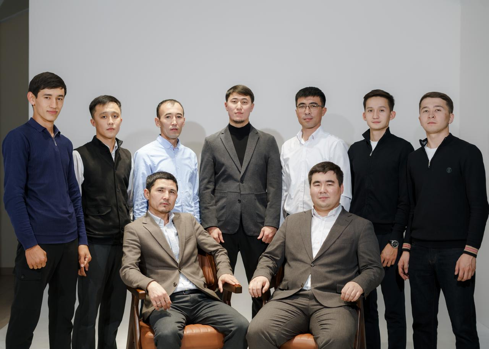
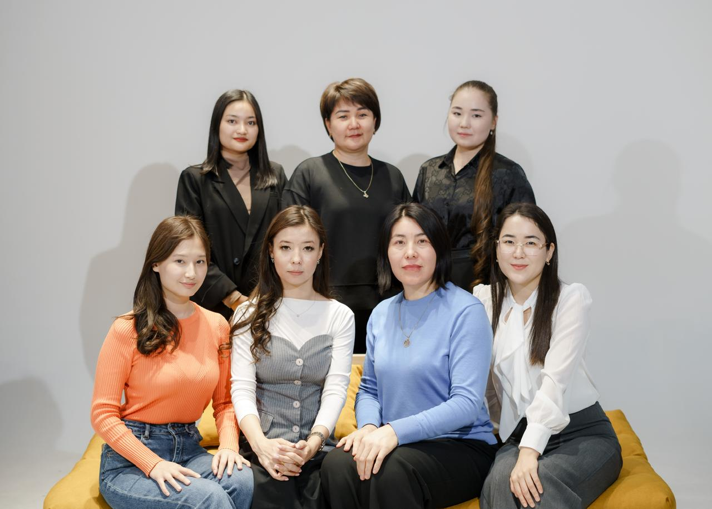

Біздің миссия – білім мен тәрбиені ұштастыра отырып, әр оқушының қабілетін толық ашу. Біз тек жақсы нәтиже емес, үздіктердің үздігін тәрбиелеуді мақсат етеміз. Негізгі мақсатымыз – әр шәкіртті 140/140 нәтижеге жеткізіп, білім шыңына шығару. Сапалы білім, жүйелі дайындық және тынымсыз еңбек арқылы біз болашақ көшбасшыларды қалыптастырамыз.
Біздің басты мақсатымыз – әр оқушының білімге деген құштарлығын арттырып, оның мүмкіндігін шексіз дамыту. Біз тек жоғары балл емес, биік мақсатқа ұмтылатын, табанды да талапты шәкірт тәрбиелеуді көздейміз. Әрбір оқушыны 140/140 нәтижеге жеткізу – біздің жүйелі еңбегіміздің көрсеткіші. Сапалы білім беру, нақты стратегия және тұрақты дайындық арқылы біз болашақта ел тізгінін ұстайтын мықты тұлғаларды қалыптастырамыз.
